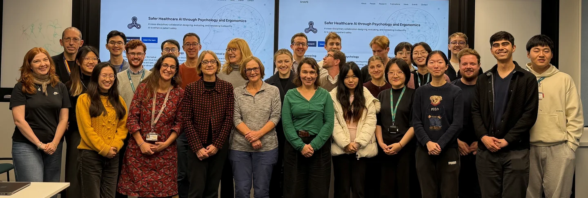

6th Human–AI for Clinical Decision-Making Workshop
Our hybrid autumn workshop brought together SHAIPE researchers across engineering, experimental psychology and clinical practice at the Institute of Biomedical Engineering, University of Oxford, and online to share project milestones and shape our roadmap.

- Format
- Hybrid workshop (in-person & Microsoft Teams)
- Venue
- IBME, 1st Floor Seminar Room
Institute of Biomedical Engineering
Old Road Campus Research Building
Headington, Oxford OX3 7DQ
| Time | Session |
|---|---|
| – | Registration |
| – | Welcome & Introductions Opening remarks by Alison Noble and Helen Higham |
| – | Key Updates from SimSight Project Cheng Ouyang, James Aylward, James Thomas, Ashley Tomlinson |
| – | Key Updates from A Human & AI Collaboration in Assessment: “AI as a Clinical Instructor” Harry Rogers |
| – | Short Break (5 minutes) |
| – | Key Updates from Experimental Psychology, Learn 2 Defer Project Progress, and Future Plans Anna Todsen, Emma Sun & Joshua Strong, Alex Capstick, Yinji Tan, Zhiyuan Liu |
| – |
Roadmap for 2026, Open Discussion & Action Points
|
| – |
Summary & Closing Remarks
|
| – | Lunch |